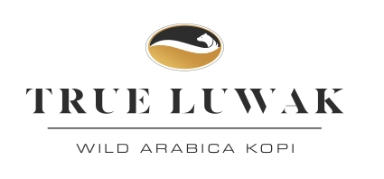
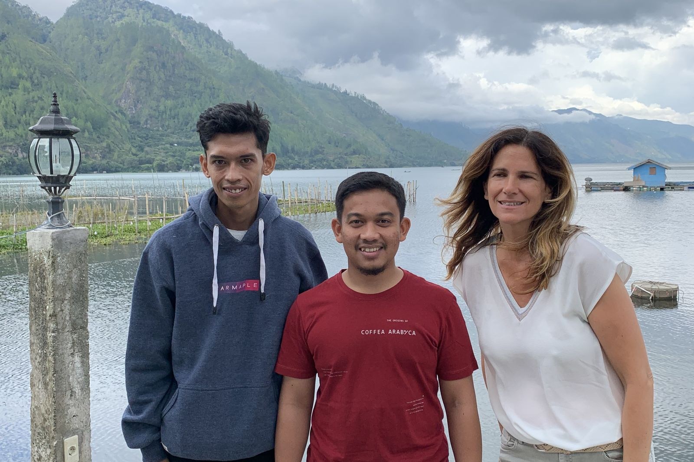
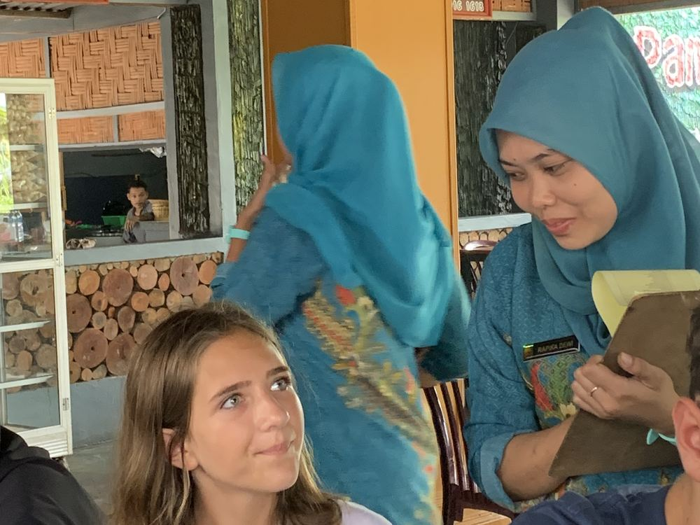
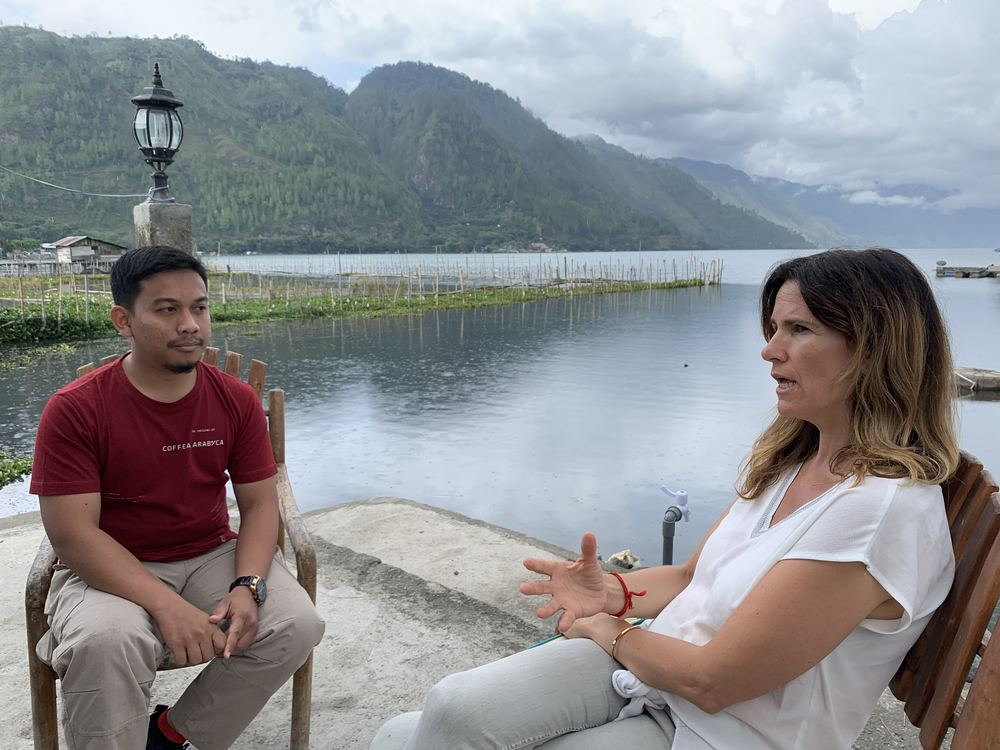

Qui Sommes Nous ?


Cette aventure commence en 2017, lors d'un voyage en immersion totale en Indonésie. True Luwak est certainement l'une des plus belles découvertes : d'un tout petit grain est née une passion pour ce café exquis.
Alessia, la fondatrice, découvre alors par hasard le Kopi Luwak : un café d'une incroyable richesse et unique en son genre. Le Kopi Luwak est une véritable explosion de saveurs, offre un goût musqué, incomparable aux autres cafés.
Ce café, préalablement digéré par une petite civette arboricole, voit ses protéines modifiées et pour partie transformées en acides aminés par les enzymes contenus dans les sucs gastriques des civettes. Les grains sont soigneusement lavés, séchés, puis triés et torréfiés de façon traditionnelle.
Notre entreprise True Luwak devient en quelques mois l'expert en café de luxe. Cette réussite caféinée, nous la devons à notre passion de l'authenticité.
Izan, notre correspondant en Indonésie, recherche sans cesse les meilleurs fournisseurs de café et veille chaque jour à une éthique scrupuleuse de la production de ce café.
Lydie, amie de longue date d'Alessia, se joint à cette aventure qui dépasse les frontières et qui rassemble les passionnés de café.
Nous sommes fiers de vous présenter le Kopi Luwak, un café unique par ses arômes, par le respect de ses agriculteurs et de sa production.
Fermez les yeux, inspirez et tombez sous le charme d'un des cafés les plus rares au monde, venu tout droit de l'île de Sumatra en Indonésie, et désormais disponible en France.

